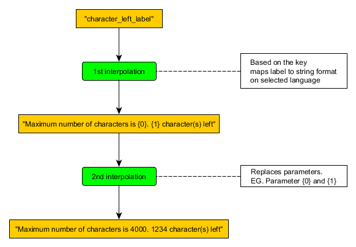

## Multi-Interpolations with Pipe (in Angular 13)
### Intention:
- To produce a string from predefined format/pattern by replacing some parameters inside.
### Use case:
- The format is defined with key "character_left_label"
- In English maps this key to "Maximum number of characters is {0}. {1} character(s) left"
- Now, we have 2 parameters: {0}, {1}
- Replace these parameters with values, EG: 4000, 1234

### Implementation
import { Pipe, PipeTransform } from '@angular/core';
//
// ...
//
@Pipe({
name: 'xLat',
pure: false
})
export class XLatPipe implements PipeTransform {
constructor() {}
transform(key : string, params = null ): string {
if( dict && dict.languages ) {
const currentDict = dict.languages[lang];
if(key in currentDict) {
var ans = currentDict[key];
if( params ) {
for( var paramKey in params ) {
var paramValue = params[paramKey];
ans = ans.replace( paramKey, paramValue );
}
}
return ans;
}
}
return key;
}
}
### How to use
<span>{{'character_left_label' | xLat : {"{0}":4000, "{1}":4000-stringModel.length } }}</span>
### Further Implementation
- We could extend to 3rd interpolation etc, by adding parameter to the function transform. EG:
transform(key : string, params_for2nd = null, params_for3rd = null ): string {
//
// do replacements for 2nd
//
// then do replacements for 3rd
//
}
#### How to use
<span>{{'key' | xLat : { ---params_for2nd--- } : { ---params_for3rd--- } }}</span>